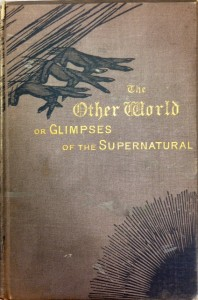

The books in this subcategory are not so different from books on alien sightings and UFOs, but The Supernatural encompasses a wide variety of unexplained occurrences. One book is a supposedly true account of a time slip two women experienced that brought them back to Marie Antoinette’s Versailles. Another simply compiles strange recorded events, such as frogs falling from the sky and globsters (animal carcasses, usually marine, of unknown origin).
Sarah Turner
Newport, R.I.: Self-Published, 1841
Summary: A pamphlet self-published by Sarah Turner, a Rhode Island woman who describes apparitions she saw, which she attributes to contact with God.
Space-Time Transients and Unusual Events
Michael A. Persinger, Gyslaine F. Lafreniere
Chicago: Nelson Hall, 1977 [First edition.]
Summary: The authors describe “fortean events” (so-called for Charles Fort), strange occurrences such as fish falling from the sky, odd creature sightings, and more. According to the authors, as these are “transient,” short-lived and rare events, they difficult to study by nature. More of these supposedly documented events include rock falls, animal falls, and phantom snipers. Specific incidents are listed along with dates and locations.
Frank Edwards
New York: Lyle Stuart 1961 [First edition.]
Summary: Edwards outlines a wide variety of strange events and people that seem to have nothing in common save a shared strangeness. Be prepared for anything from the mystery of Croaton, to physical deformities.
R. T. Gould
London: Geoffrey Bles, 1928
Summary: Bless surveys a variety of odd events and mysterious happenings. He includes reports of such events as disturbances of coffins in vaults, and describes other unexplained events and folktales like images of sunken ships on icebergs.
The Other World, or, Glimpses of the Supernatural
Frederick George Lee
London: K. Paul, Trench, 1883 [First edition.]
Summary: Trench laments, “the advance of Materialism and the consequent denial of the Supernatural must be the cause of both alarm and sadness.” In his view, supernatural occurrences are the result of intervention by god. This book is in two volumes.
The Supernatural: Its Origin, Nature and Evolution
John H. King
Summmary: In this book, King incorporates elements of world belief systems with elements of the supernatural and an evolving understanding of the universe.


{kind=link}